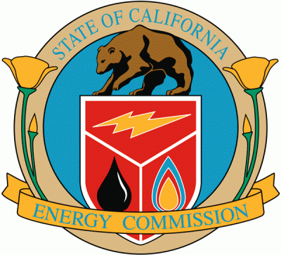

Research Projects
-

Status | Active
Concept : We propose a set of novel techniques for the practice of Spatially Explicit Life Cycle Assessment (SELCA) modeling wherein spatially explicit inventory emissions flows and impact assessment characterization factors are modeled as a set of sparse geographically referenced data grids. A case study implementation of these techniques is introduced in which spatially explicit impacts to human health are evaluated for the United States chemicals manufacturing industry as based upon available inventory emissions data from the 2010 Toxic Resource Inventory (TRI). Following the discussion of this case study's results, consideration is then given to the many technical consequences which emerge from this method’s commitment to the use of continuous spatial data and grid based spatial analytics in the context of existing LCA workflows.
Project Participants : Dr. Roland Geyer, Dr. David Stoms, Dr. Frank Davis, Eric D Fournier
-
Rooftop Photovoltaic Production Analysis

Status | Active
Concept : Using a set of LiDAR derived rooftop solar production potential maps generated by CH2M Hill for four counties in the State of California, we will develop a regression model to predict the anticipated maximum quantity of energy that could theoretically be supplied annually by rooftop mounted solar PV installations on all of the built structures within the State of California. This prediction will be derived from a regression model that uses as predictor variables tract level demographic data from the 2010 U.S. Census.
Project Participants : Dr. Roland Geyer, Eric D Fournier
-
Groundwater Recharge Via the Reuse of Treated Wastewater
Status | Future
Concept : The overarching goal of this project will be to devise a model which can be used as a planning tool to improve the joint energy-water usage efficiency of a water reuse system involving some form of groundwater recharge. We envision this model as being applicable in two possible contexts. The first context involves the planned addition of a groundwater recharge system to a basin with existing infrastructure in which both a water distribution system and WWTPs are currently existing and servicing some real world population. The second possible context will be in the case of planning for a future infrastructure system to be implemented for some new community development of expanding population center.
Project Participants : Dr. Arturo Keller, Dr. Roland Geyer, Dr. James Frew, Eric D Fournier
Spatially Explicit Life Cycle Assessment
{kind=link}
{kind=link}